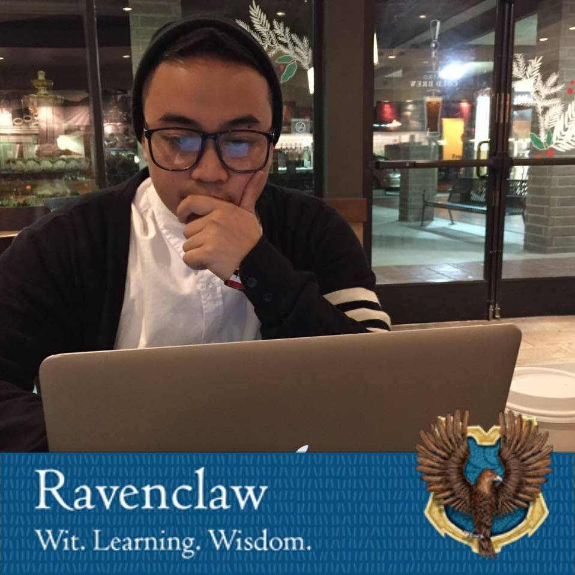

Welcome! I'm Eric Blancas and this is my personal Portfolio which consists of
my personal projects and also my school projects that I have done over
the years. I am a self-taught programmer that is attending csu channel islands
as a computer science major. Being a developer that is both self-taught and attending
college has taught me a number of things such as being a team player in projects,
problem solving/critical thinking, intercommunication skills and theory. I am quick learning,
hard working, and optimistic individual who is devoted to creating software both during work
and also free time. Feel free to take a look at my work that I have put my time into, and contact
info is available.
